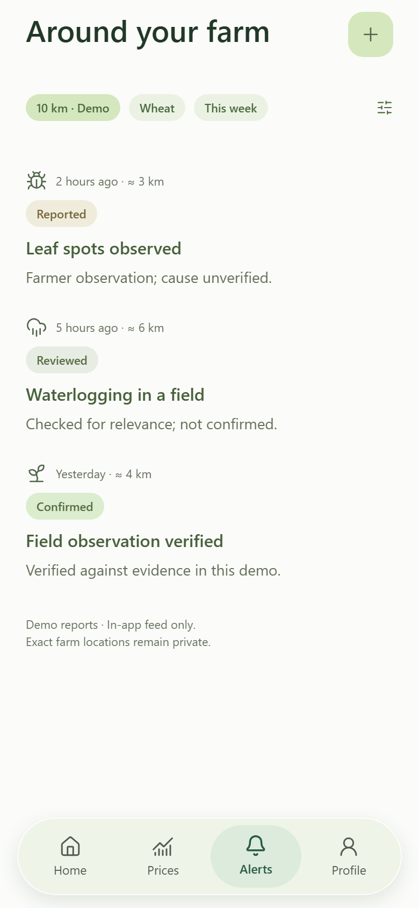
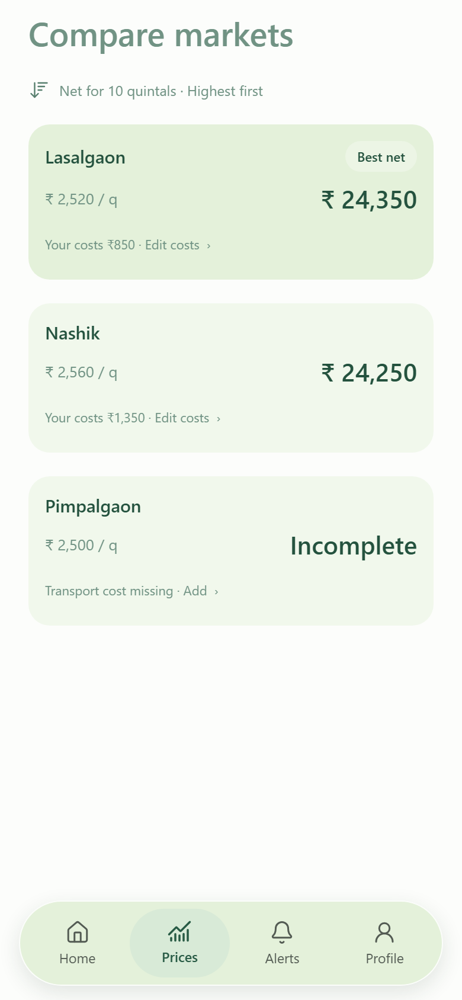

<template>
  <style>
    #root {
      position: absolute;
      inset: 0;
      overflow: hidden;
      background: #f3e9d6;
      font-family: Inter, system-ui, sans-serif;
    }
    #s4-cam { position: absolute; inset: 0; transform-origin: 960px 540px; }

    #s4-wash {
      position: absolute;
      inset: 0;
      background: radial-gradient(900px 620px at 22% 34%, rgba(255, 247, 228, 0.9), rgba(243, 233, 214, 0) 72%);
    }

    /* ---------- the phone with the real screens ---------- */
    #s4-phone {
      position: absolute;
      left: 50%;
      top: 50%;
      width: 470px;
      height: 962px;
      margin: -481px 0 0 -470px;
      border-radius: 72px;
      background: linear-gradient(148deg, #5c6a60 0%, #2c392f 26%, #202b23 62%, #46524a 100%);
      padding: 5px;
      box-shadow:
        0 60px 104px rgba(38, 59, 41, 0.36),
        0 16px 30px rgba(38, 59, 41, 0.2),
        inset 0 0 0 1px rgba(255, 255, 255, 0.22);
    }
    #s4-bezel {
      position: relative;
      width: 100%; height: 100%;
      border-radius: 68px;
      background: #10170f;
      padding: 11px;
    }
    #s4-screen {
      position: relative;
      width: 100%; height: 100%;
      border-radius: 58px;
      overflow: hidden;
      background: #fbfcf9;
    }
    #s4-glass {
      position: absolute; inset: 0; pointer-events: none; z-index: 2;
      background:
        linear-gradient(118deg, rgba(255,255,255,0.13) 0%, rgba(255,255,255,0.04) 16%, rgba(255,255,255,0) 32%),
        linear-gradient(300deg, rgba(255,255,255,0.07) 0%, rgba(255,255,255,0) 24%);
      mix-blend-mode: screen;
    }
    #s4-screen > img {
      position: absolute; inset: 0;
      width: 100%; height: 100%;
      object-fit: cover; object-position: top;
    }
    #s4-market { opacity: 0; }

    /* ---------- right column: prices, then what neighbours changed ---------- */
    #s4-col {
      position: absolute;
      left: 900px;
      top: 96px;
      width: 900px;
    }
    #s4-eyebrow {
      font: italic 400 31px/1 "EB Garamond", Georgia, serif;
      color: #6f7d67;
      opacity: 0;
    }
    #s4-head {
      margin-top: 20px;
      font: 600 72px/1.05 Inter, sans-serif;
      letter-spacing: -0.028em;
      color: #263b29;
      opacity: 0;
    }
    .s4-row {
      display: flex;
      align-items: baseline;
      gap: 24px;
      padding: 24px 0;
      border-bottom: 1px solid rgba(38, 59, 41, 0.13);
      opacity: 0;
    }
    .s4-row:last-of-type { border-bottom: 0; }
    .s4-m {
      width: 300px;
      font: 600 34px/1.2 Inter, sans-serif;
      color: #263b29;
      letter-spacing: -0.012em;
      flex: none;
    }
    .s4-n {
      margin-left: auto;
      font: 600 42px/1 Inter, sans-serif;
      color: #35512c;
      letter-spacing: -0.02em;
    }
    .s4-n.best { color: #263b29; }
    .s4-tag {
      display: inline-block;
      margin-top: 9px;
      font: italic 400 28px/1 "EB Garamond", Georgia, serif;
      color: #6f7d67;
    }

    /* ---------- peer practice card, cut paper ---------- */
    #s4-peer {
      margin-top: 18px;
      padding: 28px 32px 30px;
      border-radius: 24px;
      background: #eef4e7;
      box-shadow: 0 20px 44px rgba(38, 59, 41, 0.14);
      opacity: 0;
    }
    #s4-peer .who {
      font: italic 400 29px/1 "EB Garamond", Georgia, serif;
      color: #6f7d67;
    }
    #s4-peer .what {
      margin-top: 14px;
      font: 600 34px/1.3 Inter, sans-serif;
      color: #263b29;
      letter-spacing: -0.01em;
    }
    #s4-peer .why {
      margin-top: 12px;
      font: 400 30px/1.45 Inter, sans-serif;
      color: #55704c;
    }
    #s4-peer .dist {
      margin-top: 18px;
      display: flex;
      align-items: center;
      gap: 11px;
      font: 500 28px/1 Inter, sans-serif;
      color: #6f7d67;
    }
    #s4-peer .dist i {
      width: 10px; height: 10px; border-radius: 50%; background: #8fae6f;
    }

    /* ---------- the claim, then the mark ---------- */
    #s4-claim {
      position: absolute;
      left: 50%; top: 50%;
      width: 1400px;
      margin: -120px 0 0 -700px;
      text-align: center;
      font: 600 88px/1.12 Inter, sans-serif;
      letter-spacing: -0.03em;
      color: #263b29;
      opacity: 0;
    }
    #s4-end { position: absolute; inset: 0; background: #f6f0e0; opacity: 0; }
    #s4-end-inner {
      position: absolute;
      left: 50%; top: 50%;
      transform: translate(-50%, -50%);
      text-align: center;
    }
    #s4-mark { width: 168px; height: 168px; margin: 0 auto; opacity: 0; mix-blend-mode: multiply; }
    #s4-word {
      margin-top: 34px;
      font: 600 96px/1 Inter, sans-serif;
      letter-spacing: -0.04em;
      color: #263b29;
      opacity: 0;
    }
    #s4-tagline {
      margin-top: 20px;
      font: italic 400 33px/1 "EB Garamond", Georgia, serif;
      color: #6f7d67;
      opacity: 0;
    }

    #grain4 {
      position: absolute;
      inset: 0;
      background-image: url("../assets/grain.png");
      background-size: 256px 256px;
      opacity: 0.05;
      mix-blend-mode: multiply;
      pointer-events: none;
    }
  </style>

  <div data-hf-id="hf-2tvg" id="root" data-composition-id="s4" data-width="1920" data-height="1080">
    <div data-hf-id="hf-y75u" id="s4-cam">
      <div data-hf-id="hf-9gvk" id="s4-wash"></div>

      <div data-hf-id="hf-470n" id="s4-phone">
        <div data-hf-id="hf-bz04" id="s4-bezel">
          <div data-hf-id="hf-njex" id="s4-screen">
            
            
            <div data-hf-id="hf-gl04" id="s4-glass"></div>
          </div>
        </div>
      </div>
    </div>

    <div data-hf-id="hf-zpz1" id="s4-col">
      <div data-hf-id="hf-rlcv" id="s4-eyebrow">Market, today</div>
      <div data-hf-id="hf-riam" id="s4-head">What a neighbour<br data-hf-id="hf-x5px" />actually got.</div>

      <div data-hf-id="hf-dk15" id="s4-row-0" class="s4-row">
        <div data-hf-id="hf-yeow"><div data-hf-id="hf-kajp" class="s4-m">Lasalgaon</div><span data-hf-id="hf-yhza" class="s4-tag">best net</span></div>
        <div data-hf-id="hf-9tl1" class="s4-n best">₹ 24,350</div>
      </div>
      <div data-hf-id="hf-csdc" id="s4-row-1" class="s4-row">
        <div data-hf-id="hf-y7yw"><div data-hf-id="hf-6u6h" class="s4-m">Nashik</div><span data-hf-id="hf-dfx4" class="s4-tag">₹ 2,560 a quintal</span></div>
        <div data-hf-id="hf-fgv8" class="s4-n">₹ 24,250</div>
      </div>
      <div data-hf-id="hf-lg97" id="s4-row-2" class="s4-row">
        <div data-hf-id="hf-x11t"><div data-hf-id="hf-c5ad" class="s4-m">Pimpalgaon</div><span data-hf-id="hf-erhw" class="s4-tag">transport missing</span></div>
        <div data-hf-id="hf-auu9" class="s4-n" style="color:#6f7d67;font-size:34px">Incomplete</div>
      </div>

      <div data-hf-id="hf-17m5" id="s4-peer">
        <div data-hf-id="hf-bi49" class="who">Sunil · 3 km away</div>
        <div data-hf-id="hf-123r" class="what">Resistant variety,<br data-hf-id="hf-rsrt" />after the same spots.</div>
        <div data-hf-id="hf-0tz5" class="why">Next check came back clear.</div>
        <div data-hf-id="hf-509s" class="dist"><i data-hf-id="hf-wt6k"></i>Shared nearby</div>
      </div>
    </div>

    <div data-hf-id="hf-7321" id="s4-claim">Leaf, soil,<br data-hf-id="hf-szow" />and the price.</div>

    <div data-hf-id="hf-wnv8" id="s4-end">
      <div data-hf-id="hf-vtuv" id="s4-end-inner">
        
        <div data-hf-id="hf-uqfv" id="s4-word">Khetify</div>
        <div data-hf-id="hf-nhtf" id="s4-tagline">A practical plan from seed to sale.</div>
      </div>
    </div>

    <div data-hf-id="hf-3e62" id="grain4"></div>

    <script>const F = 0.8;                       // whole-film speed-up
      const T = (x) => +(x * F).toFixed(3);  // scale an authored beat time

      const tl = gsap.timeline({ paused: true });

      gsap.set("#s4-cam", { scale: 1.32, opacity: 1 });
      gsap.set("#s4-phone", { opacity: 1, scale: 1, y: 0, x: 0 });
      gsap.set("#s4-col", { opacity: 1 });
      gsap.set("#s4-claim", { opacity: 0, y: 24 });
      gsap.set("#s4-end", { opacity: 0 });
      gsap.set("#s4-end-inner", { scale: 1 });

      // ---------- 0.0 dive out of the dot and land on the phone ----------
      tl.to("#s4-cam", { scale: 1, duration: T(1.1), ease: "power3.out" }, T(0));
      
      // ---------- 1.4 the mandi screen arrives; the phone leans left ----------
      tl.to("#s4-comm", { opacity: 0, duration: T(0.3), ease: "power2.inOut" }, T(1.15));
      tl.to("#s4-market", { opacity: 1, duration: T(0.3), ease: "power2.inOut" }, T(1.15));
      tl.to("#s4-phone", { x: -352, duration: T(1.3), ease: "power2.inOut" }, T(1.5));

      // ---------- 1.85 the column reads in ----------
      tl.fromTo("#s4-eyebrow", { opacity: 0 }, { opacity: 1, duration: T(0.4) }, T(1.85));
      tl.fromTo("#s4-head", { opacity: 0, y: 22 }, { opacity: 1, y: 0, duration: T(0.75), ease: "power3.out" }, T(1.95));
      tl.to("#s4-row-0", { opacity: 1, duration: T(0.45), ease: "power3.out" }, T(2.7));
      tl.to("#s4-row-1", { opacity: 1, duration: T(0.45), ease: "power3.out" }, T(2.94));
      tl.to("#s4-row-2", { opacity: 1, duration: T(0.45), ease: "power3.out" }, T(3.18));

      // ---------- 4.15 what a neighbour actually changed ----------
      tl.to("#s4-peer", { opacity: 1, duration: T(0.65), ease: "expo.out" }, T(3.75));

      // ---------- 6.0 the frame clears and the claim lands ----------
      tl.to("#s4-col, #s4-phone", { opacity: 0, y: -18, duration: T(0.7), ease: "power2.in" }, T(6.7));
      tl.to("#s4-claim", { opacity: 1, y: 0, duration: T(0.8), ease: "power3.out" }, T(7.2));
      tl.to("#s4-claim", { scale: 1.035, duration: T(2.6), ease: "power1.inOut" }, T(8.0));

      // ---------- 8.7 the end card: mark, then the wordmark wiped in ----------
      tl.to("#s4-claim", { opacity: 0, duration: T(0.45), ease: "power2.in" }, T(9.9));
      tl.to("#s4-end", { opacity: 1, duration: T(0.6), ease: "power2.inOut" }, T(10.05));
      tl.fromTo("#s4-mark", { opacity: 0, scale: 0.72, y: 26, rotation: -7 }, { opacity: 1, scale: 1, y: 0, rotation: 0, duration: T(0.85), ease: "expo.out" }, T(9.95));
      tl.fromTo("#s4-word", { opacity: 0, clipPath: "inset(0 100% 0 0)" }, { opacity: 1, clipPath: "inset(0 0% 0 0)", duration: T(0.75), ease: "power3.out" }, T(10.35));
      tl.fromTo("#s4-tagline", { opacity: 0, y: 12 }, { opacity: 1, y: 0, duration: T(0.6), ease: "power3.out" }, T(10.95));

      // the end card keeps breathing to the last frame
      tl.to("#s4-end-inner", { scale: 1.045, duration: T(2.7), ease: "none" }, T(11.1));

      window.__timelines["s4"] = tl;
    </script>
  </div>
</template>
